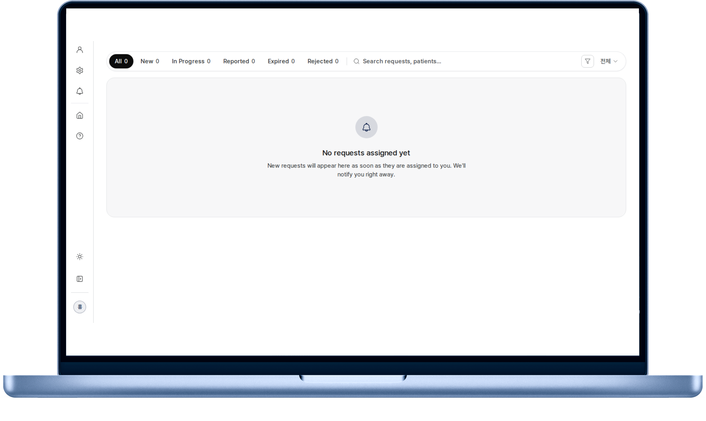

영상의학 전문 인력을
상시 채용하기 어려운 병원
필요할 때만 이용하니까,
인력 부담 없이 판독을 맡길 수 있어요.
영상을 올리고 의뢰서만 보내면, 검증된 영상의학 수의사가 판독해 드려요.
의뢰부터 결과 확인까지 한곳에서 끝나요.

병원에서 의뢰하면 검증된 전문가가 영상을 꼼꼼히 확인하고,
믿을 수 있는 판독 결과로 답해 드려요.
필요할 때만 이용하니까,
인력 부담 없이 판독을 맡길 수 있어요.
의뢰 접수부터 진행 상태와 결과 확인까지
한곳에서 관리할 수 있어요.
판단이 애매한 영상도
전문가의 의견으로 확신을 더하세요.
전문 판독은 더 가까이,
번거로운 일은 더 적게.

최대 48시간 이내에
진단 결과를 받아보세요.
AI가 내용을 다듬어 주니까
작성 시간이 확 줄어요.
X-ray · CT · MRI · 초음파 등
주요 DICOM 영상을 모두 받아요.

환자 정보는 보내고 저장하는
모든 과정에서 암호화돼요.
따로 설치할 필요 없이 웹으로 접속하면 돼요.
휴대폰, 태블릿, PC 어떤 화면에서도 보기 편하게 맞춰 보여 드려요.
의뢰 접수부터 전문 판독, 결과 알림까지.
진료의 흐름을 끊지 않는 네 단계.
영상을 올리고
의뢰서를 작성하면 끝이에요.
의뢰 내용을 확인한 뒤
알맞은 영상의학 전문 수의사를 배정해요.
영상을 꼼꼼히 살펴보고
종합 진단 보고서를 작성해요.
판독이 끝나면 이메일 · 문자 ·
카카오톡 · 왓츠앱으로 바로 알려 드려요.
의뢰한 영상은 기본 제공되는 ExamVue 365 Flow
웹 PACS 뷰어에서 바로 열어 볼 수 있어요.
설치 없이, 의뢰한 영상을 웹 뷰어로 확인해요.
확대, 밝기 · 대비 조절, 측정까지 판독실처럼 써요.
원격 판독 외 업무에도 쓰려면 별도 요금으로 이용할 수 있어요.
급한 의뢰는 최대 48시간 안에 결과를 받아 보실 수 있어요. 판독이 끝나면 이메일 · 문자 · 카카오톡 · 왓츠앱으로 바로 알려 드려요.
X-ray, CT, MRI, 초음파 등 주요 DICOM 영상을 의뢰할 수 있어요. 영상을 올리고 의뢰서를 작성하면 접수가 끝나요.
검증된 영상의학 전문 수의사가 판독해요. 의뢰 내용을 확인한 뒤 검사에 맞는 판독의를 배정해 드려요.
검사 종류와 수량에 따른 현재 요금은 위 요금 안내에서 확인하실 수 있어요.
네, 영상을 직접 올려서 의뢰하시면 돼요. 의뢰한 영상은 기본 제공되는 웹 PACS 뷰어에서 바로 열어 볼 수 있어요.
아니요, 웹으로 접속하면 바로 쓸 수 있어요. 휴대폰, 태블릿, PC 어디서든 의뢰하고 결과를 확인하세요.